Protocol
Overview
This page describes the protocol for collecting, capturing, and cleaning data associated with the project.
The text here is adapted from a working draft document written in Google Docs that is hosted here:
https://docs.google.com/document/d/1-ZKrNflBO7UIq5I0pJ8U5K-rtoiads12Zf_OQq_S65Q/edit
Literature search
Goals
- Capture the published literature that reports data on using Teller Acuity Cards.
- Create a database of that literature.
Phase I: Search
Here are some preparatory steps that need to be completed prior to doing literature search tasks.
- Open Google Chrome from a lab computer.
- Log into psubrainlab’s google account (psubrainlab@gmail.com ask Dr. Gilmore or Andrea for password)
- Search “paperpile chrome extension” and install the paperpile chrome extension
- On the paperpile website click ’log in”. Choose the “log in with google” option
Search terms
teller acuity cards visual acuity cards teller cards
Google Scholar
- Visit Google Scholar: https://scholar.google.com/
- Enter the search term
- Make sure to select ‘Sort by relevance’, ‘Any type’, and do not check ‘include patents’ or ‘include citations’
For example, this URL uses teller acuity cards:
https://scholar.google.com/scholar?hl=en&as_sdt=0,39&as_vis=1&q=%22teller+acuity+cards%22
When looking for sources on Google Scholar, look for the Paperpile box and ensure it is gray. Gray sources are sources we do not currently have in Paperpile.
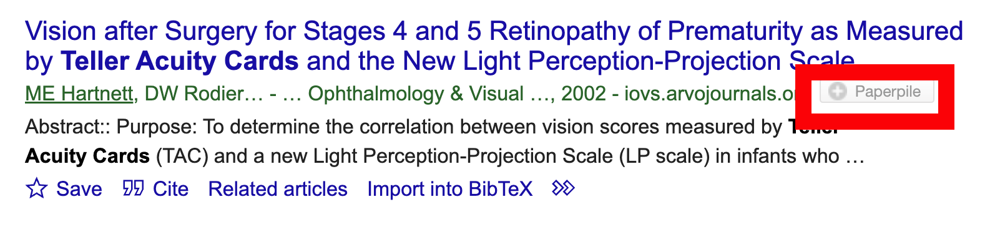
Green sources indicate we already have collected them in Paperpile.
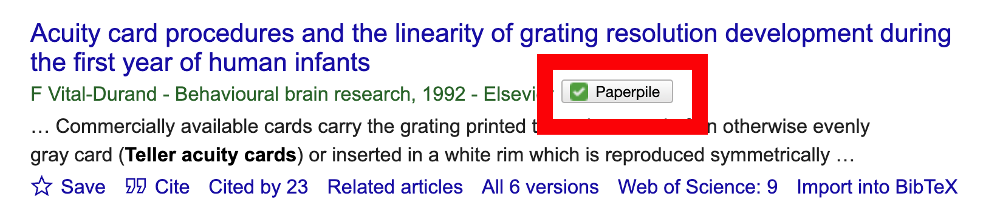
Add the references not already in Paperpile by pressing the grey button.
- After you have retrieved a page of entries, switch to the Paperpile tab to add the
TACtag to these entries. Use shift-click to select multiple entries in Paperpile.
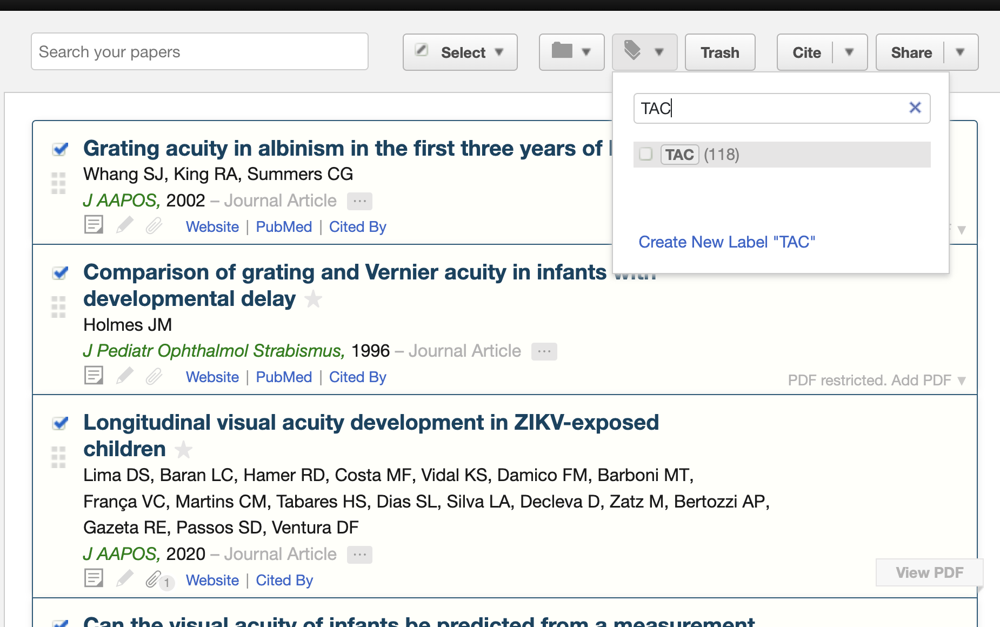
Phase II: Data entry
Goals
- Create a database of references found in Phase I.
Option A: Automated extraction
It is possible to export the Paperpile references with the TAC tag directly to Github. Rick tested this workflow on 2024-02-02. What is yet unclear is whether the reference file automatically updates.
There appear to be some R packages that can read *.bib files and convert them to data frames, see https://rdrr.io/cran/revtools/ and https://docs.ropensci.org/bib2df/.
We should assign someone the task of determining how to parse a *.bib file into a data frame.
Option B: Manual entry
In the meantime, we fall back on manual data entry.
- Open the Google Sheet “Legacy Project Acuity Data: By Paper” and open the
paper_datatab:
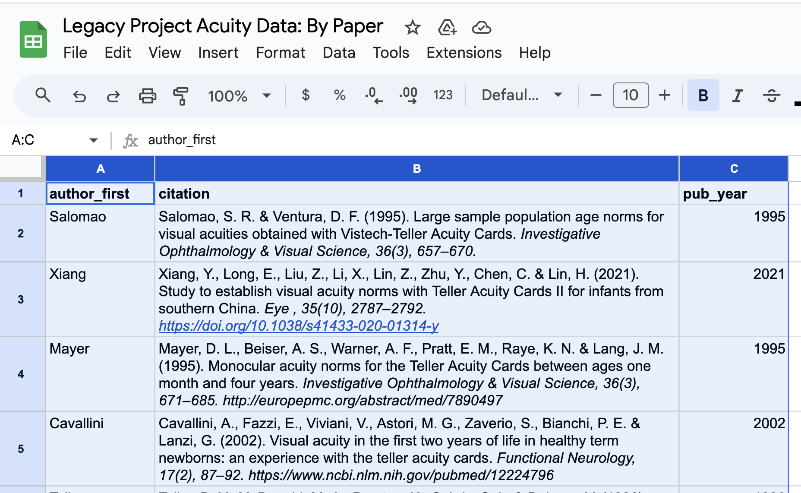 2. In a second Chrome window, click on the Paperpile icon and open Paperpile.
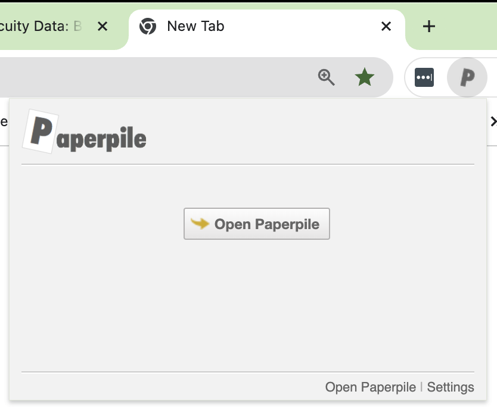 3. In the left panel of the Paperpile window, search for the TAC tag and select it.
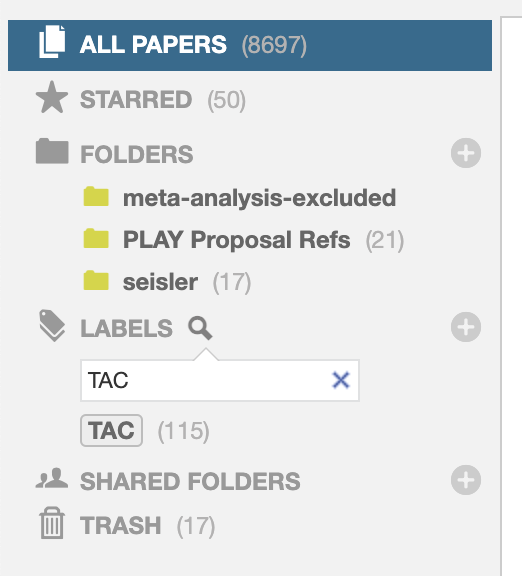
- In the right panel of the Paperpile window, select sort by author.
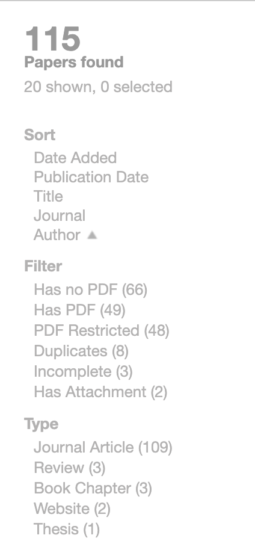 5. Shrink the Paperpile window and push it flush right, then shrink the Google Sheets window and push it flush left.
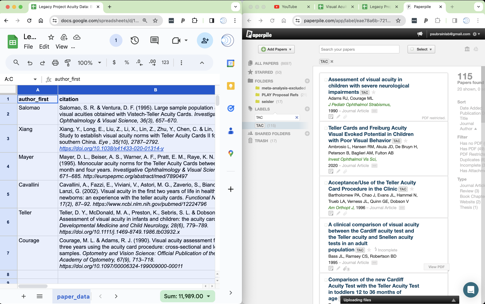 6. Sort Google Sheet data by Author
Copy citation (in APA format) from Paperpile (using the command+c keyboard shortcut) and paste into ‘citation’ field in Google Sheet.
Reformat Google Sheet ‘citation’ column.
- Select column
- Select Format | Wrapping | Wrap
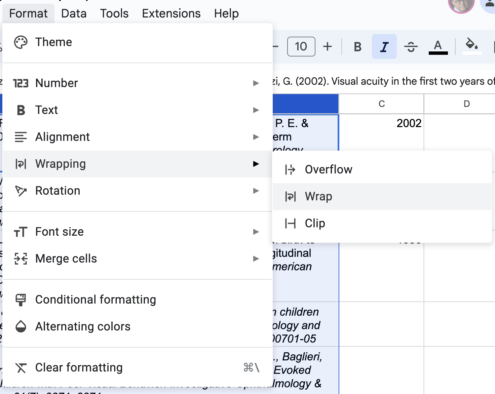
- Sort Google Sheet data by
author_firstandpub_year
Data | Sort Range | Advanced
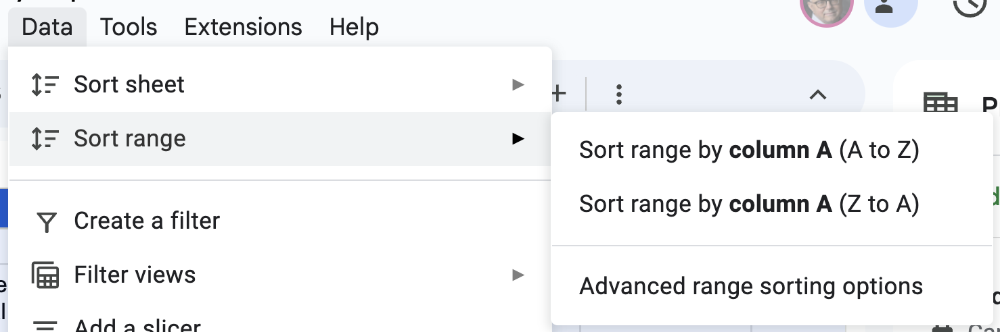
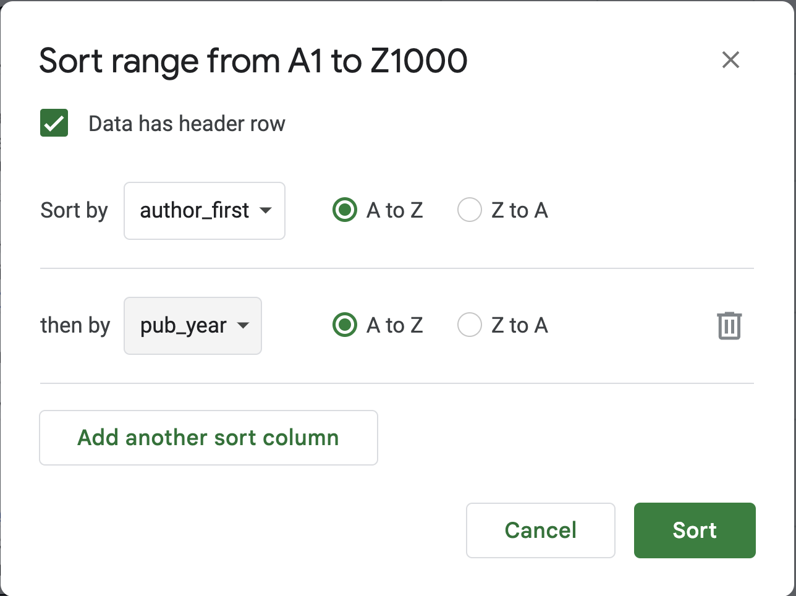
author_first and pub_yearData extraction
Goals
- To extract group-level data from each paper identified in the prior phase.
- Enter group-level data into a common database.